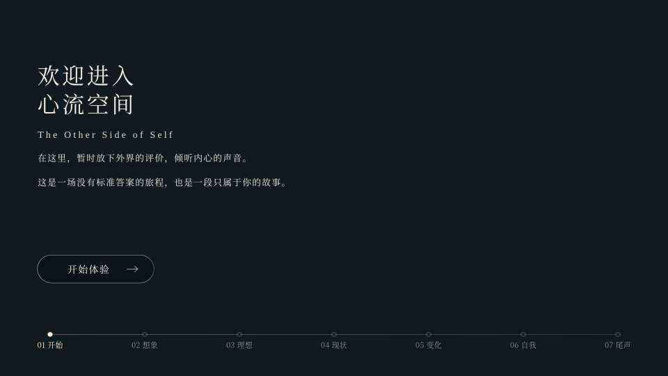
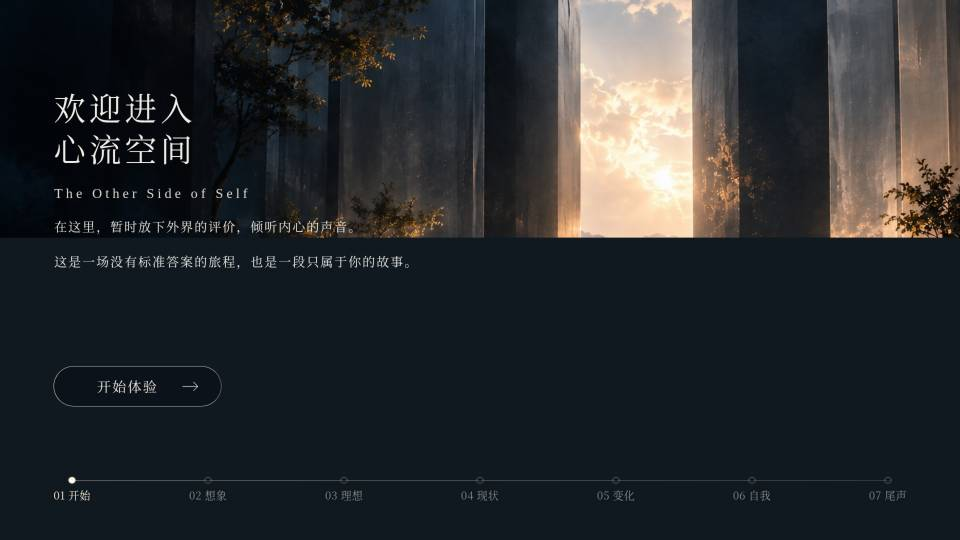
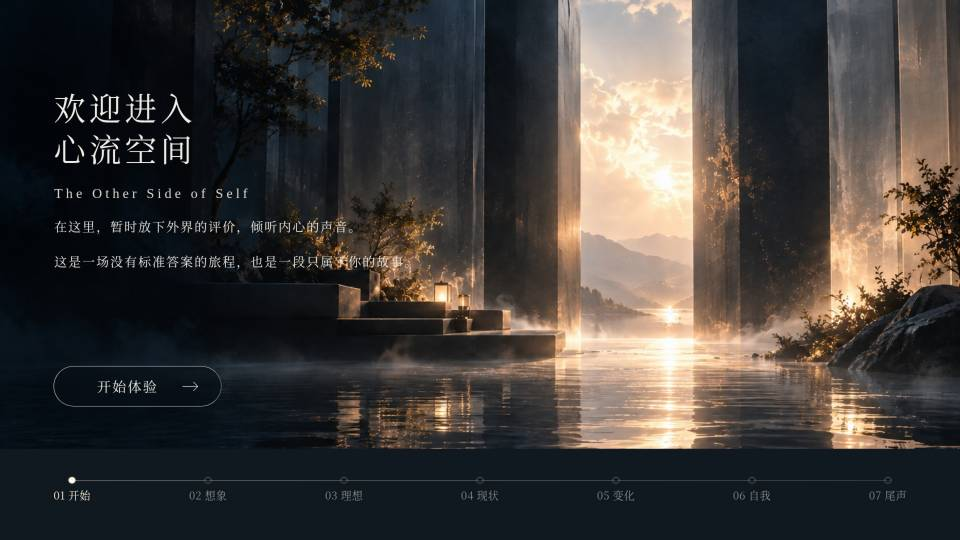
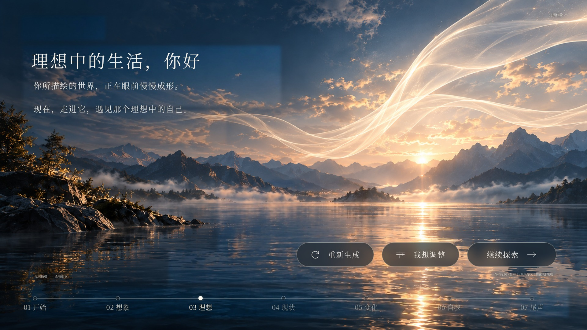
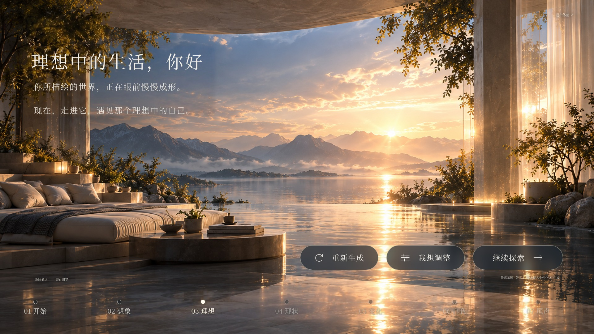

返回网站《心流空间》背景首次加载专项修复
保留原场景、文案、字体配置、布局与业务逻辑。背景下载并解码完成后整体显示；切页等待时保留上一张完整场景。无新增动画。
| 实际测量 | 修改前 | 修改后 |
|---|
| 首页背景文件 | 492,329 字节 | 299,190 字节（−39.2%） |
| 普通首次完整背景 | 488.3 ms | 442.5 ms |
| 缓存再次访问 | 615.2 ms | 422.9 ms |
| 慢网首次完整背景 | 4,472.6 ms | 3,385.4 ms |
| 慢网图片不完整但已显示的时间 | 2,510.3 ms | 0 ms |
| 首页就绪前背景 URL 数 | 1 | 1 |
| 七页桌面背景总资源体积 | 17.60 MB | 11.12 MB |
| 七页手机背景 URL 数 | 13 | 7 |
Chromium 三轮中位数，1920×1080，本地生产构建；慢网为 150 ms 延迟、200 KiB/s 总下载带宽。缓存测试首页图片网络传输均为 0 字节。首页稳定后，空闲时低优先级预载第二页两层背景；第三页起按需加载。
环境限制：Linux Chromium 与 Playwright WebKit 已验证，无法声称实机 Safari 已测试。WebKit 单轮慢网 4.149→3.476 秒，缓存访问 0.419→0.721 秒，未证明其缓存访问提速。两版本外部字体 CSS 均因云代理证书信任失败使用原有回退字体，未改字体配置。完整方法、限制、原始网络与 Performance 证据见下方文件。
实测数据及限制 JSON · 原始 Network / Performance / 录帧证据 ZIP · 图片体积及质量指标
真实慢网录帧
修改前：部分画面先显示，水面随后补齐

实际录帧 before-slow-3
实际录帧 before-slow-4
实际录帧 before-slow-5实际录帧 before-slow-6修改后：静态底色 → 完整背景
实际录帧 after-slow-1实际录帧 after-slow-2实际录帧 after-slow-3
延迟其中一层时的就绪控制

Page 03 画层请求被测试阻塞：保留完整 Page 02 场景
请求释放且两层解码后：完整 Page 03 场景七页桌面与手机预览
chromium · 1920px · 七页截图
chromium · 390px · 七页截图
webkit · 1920px · 七页截图
webkit · 390px · 七页截图
图片资源逐项体积
原图全部保留备份。原景 PNG 转 WebP；第 05、06 页底图保留 JPEG，第 06 页镜面采样源字节不变。第 01 页原景画层仅离线转换，不在运行时下载。
| 页面 | 画层 | 原始字节 | 优化字节 | 编码 |
|---|
| 01 | 底图 | 492,329 | 299,190 | WebP 94 |
| 01 | 原景画层 | 2,205,399 | 1,159,648 | WebP near-lossless 60 |
| 02 | 底图 | 582,965 | 448,046 | WebP 96 |
| 02 | 原景画层 | 2,204,163 | 1,213,984 | WebP near-lossless 60 |
| 03 | 底图 | 661,204 | 596,902 | WebP 98 |
| 03 | 原景画层 | 2,527,052 | 1,495,064 | WebP near-lossless 80 |
| 04 | 底图 | 544,198 | 411,344 | WebP 96 |
| 04 | 原景画层 | 2,092,350 | 1,155,626 | WebP near-lossless 60 |
| 05 | 底图 | 693,457 | 693,457 | original optimized JPEG (quality floor preserved) |
| 05 | 原景画层 | 2,326,077 | 1,335,342 | WebP near-lossless 60 |
| 06 | 底图 | 555,006 | 555,006 | original JPEG (mirror source byte-identical) |
| 06 | 原景画层 | 2,223,756 | 1,221,060 | WebP near-lossless 60 |
| 07 | 底图 | 563,191 | 424,702 | WebP 96 |
| 07 | 原景画层 | 2,135,585 | 1,270,690 | WebP near-lossless 80 |
GitHub Pages 实际缓存策略为 max-age=600 并带 ETag；使用带内容哈希的文件名，部署保留旧哈希资源。未添加 service worker 或虚构 immutable 缓存头。